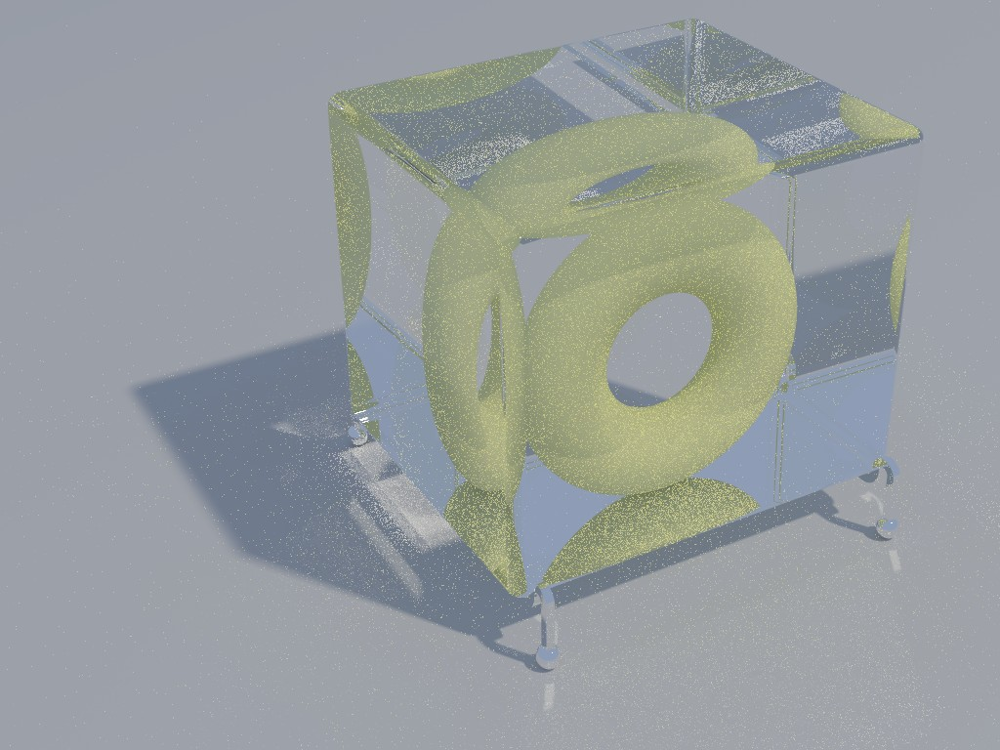
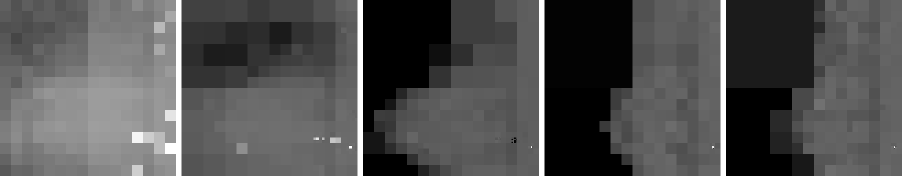
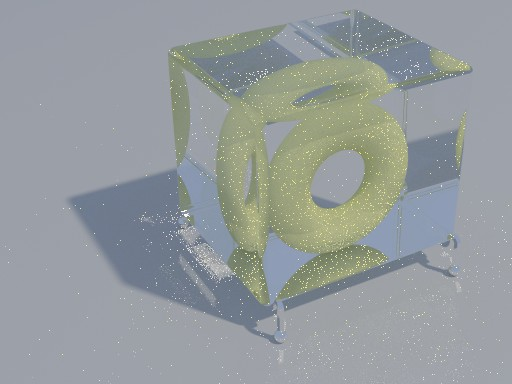
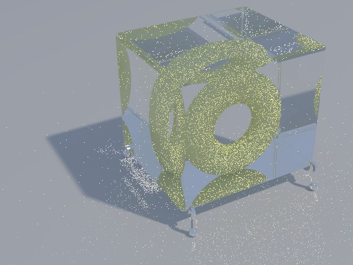
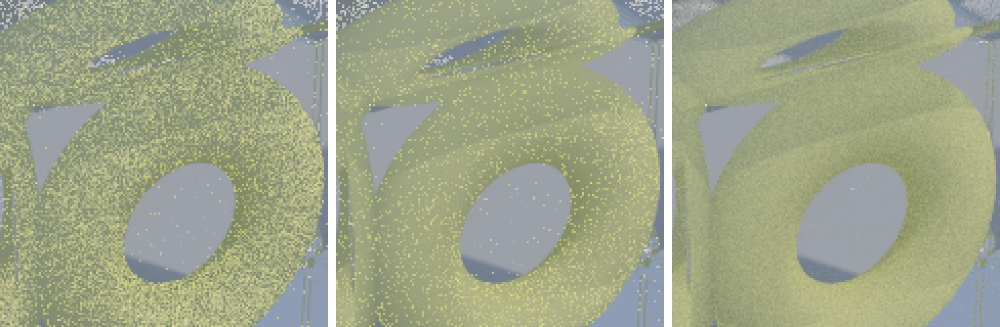
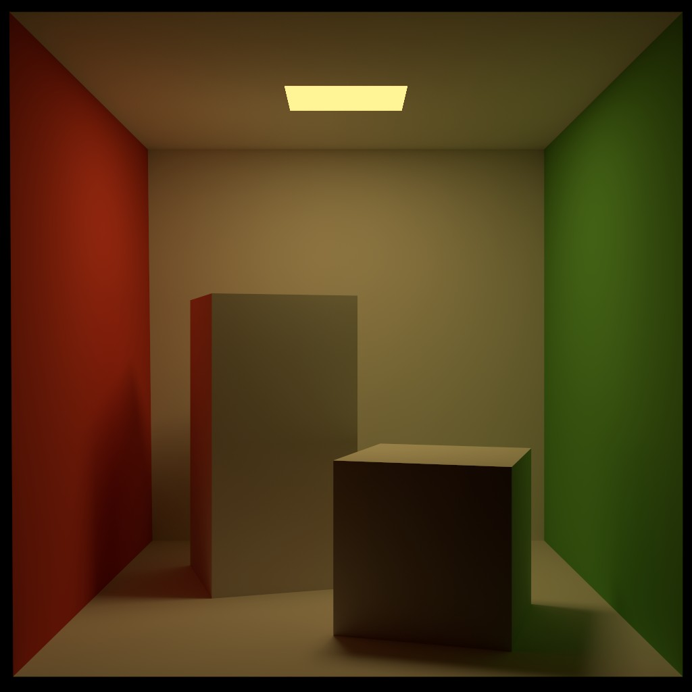

Path Guiding in Wienori
Read the full write-up with all details and results

I extended my path tracer from the TU Wien rendering course (Wienori) with path guiding, following Practical Path Guiding for Efficient Light-Transport Simulation (Müller, Gross and Novák, EGSR 2017). A path tracer chooses new directions mostly according to the material, and next event estimation connects each surface point directly to a light source. This breaks down when light only reaches a surface through glass: in the torus scene, every shadow ray towards the sun is blocked, and the sunlight is only found by paths that pass through the glass by chance. These rare but bright paths show up as fireflies that converge very slowly.
How it works
Path guiding learns, during rendering, from which directions light arrives at each point in the scene, and samples new directions from this learned distribution. The incident light is stored in an SD-tree: a spatial binary tree that adaptively subdivides the scene, with a directional quadtree in each leaf. The tree is trained over several iterations with doubling sample counts, and the guided directions are combined with material sampling and next event estimation through multiple importance sampling, so the result stays unbiased.

Results
I compared path guiding against my baseline path tracer (with next event estimation, MIS and Russian roulette) at equal render time, with a reference rendered at 131,072 samples per pixel. In the torus scene, path guiding has a lower error at every budget:
| Budget | MSE vs. path tracing | Visible error (FLIP) vs. path tracing |
|---|---|---|
| 10 s | −10% | −28% |
| 1 min | −21% | −21% |
| 5 min | −27% | −14% |


Path tracing (1 min) Path guiding (1 min)
In the Cornell box, where next event estimation already handles the light well, both methods are visually equal. There, the extra cost of guiding outweighs its small gain per sample, which shows the trade-off of the method: path guiding pays off where next event estimation fails, and when the render budget is large enough to amortize the training.

Verification
Each part was checked separately: a χ² test for the quadtree's sampling and pdf, a comparison against the baseline to make sure the guided images converge to the same result, and debug visualizations of the spatial tree and the learned directional distributions.